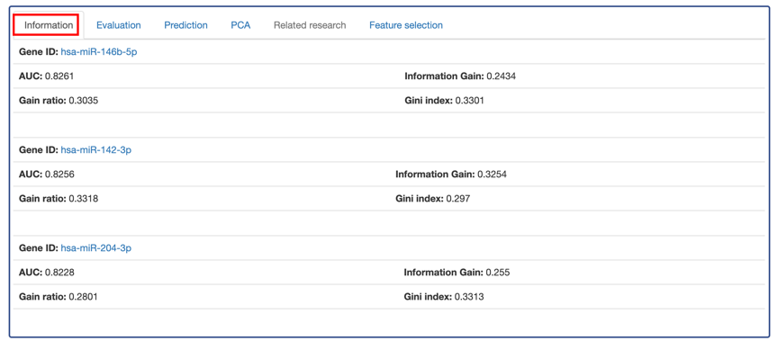
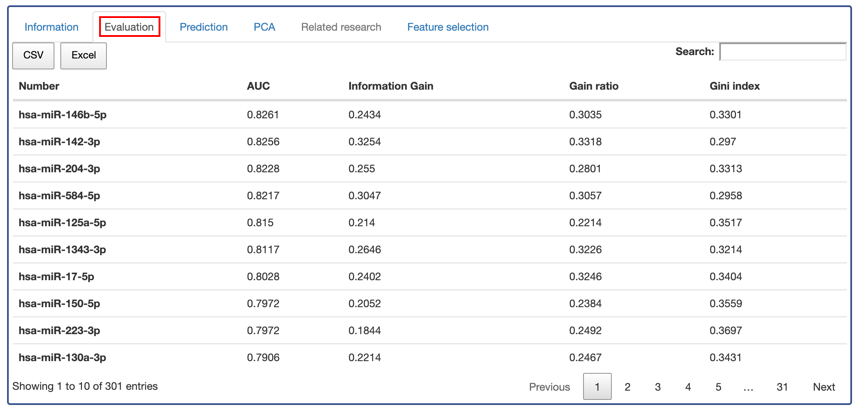
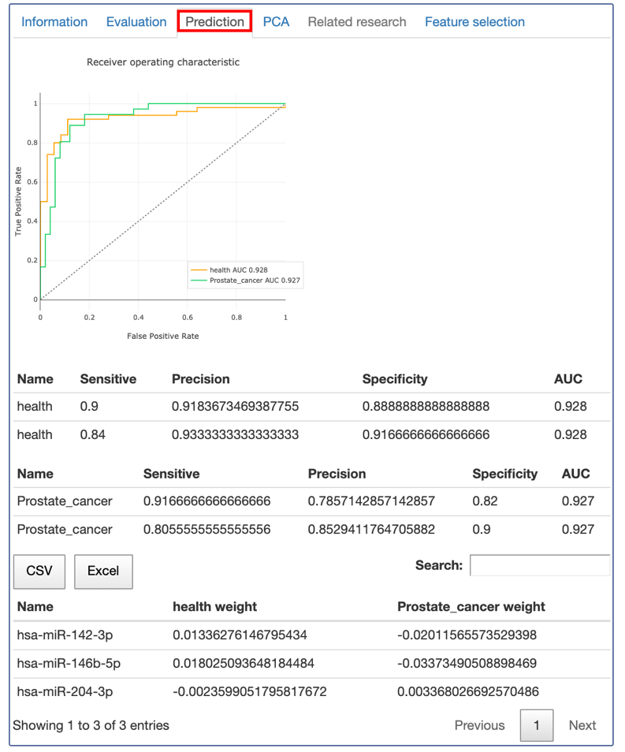
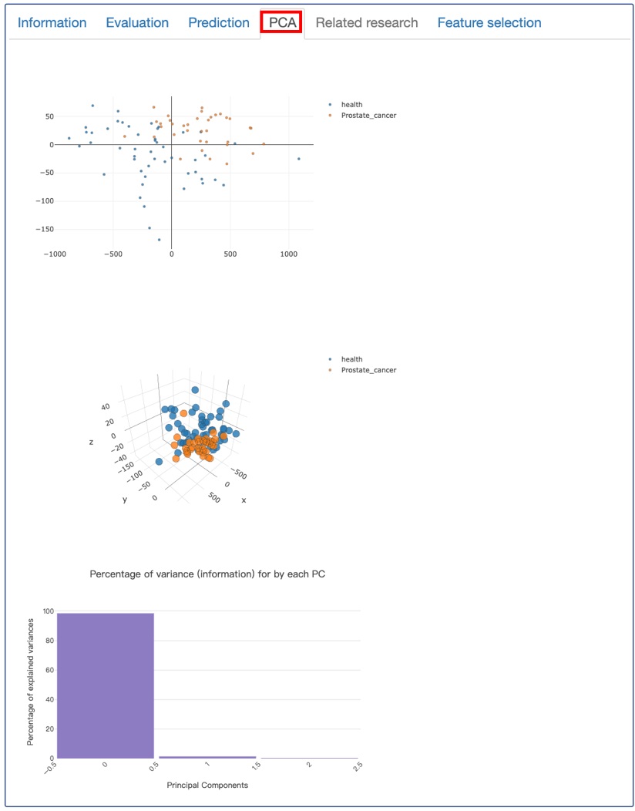
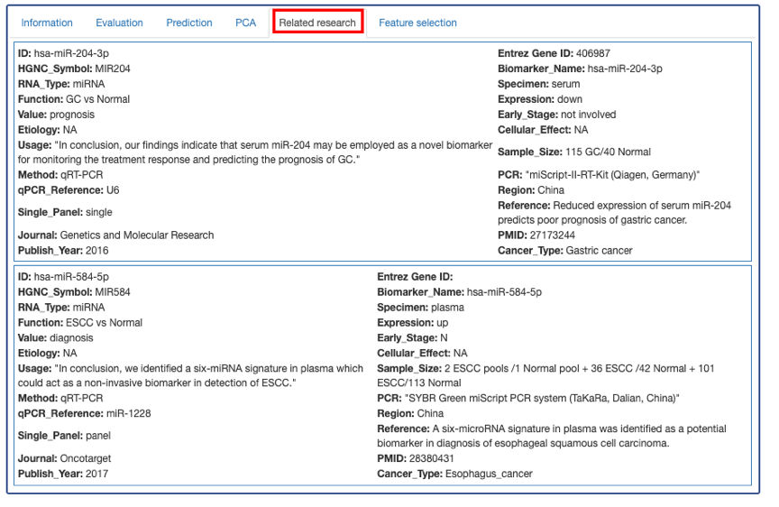
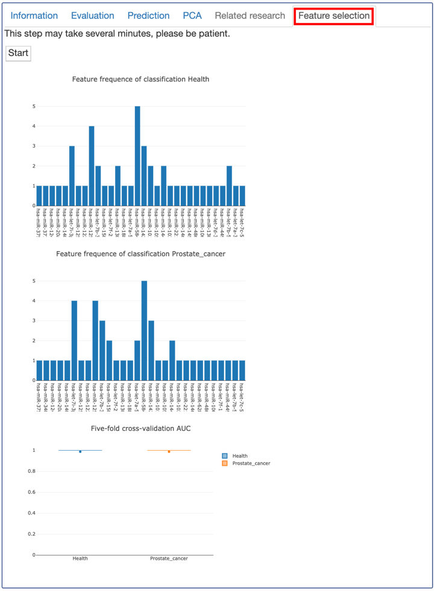

Circulating extracellular RNAs (exRNAs) have the potential to serve as biomarkers for the liquid biopsy. All known types of RNA have been found in body fluids: miRNA, piRNA, mRNA, snoRNA, snRNA, lncRNA, tRNA and Y RNA.
exRpanel is developed to identify biomarker panels from exRNAs sequencing data. Using the optimized newton method logistician regression algorithms written in JavaScript, the exRpanel makes a tradeoff between flexibility and interpretability. It makes the most of the exRNAs expression matrix to perform evaluation, prediction and feature selection. The panel markers’ basic information and related research articles are also provided to the users.
Using the exRpanel is easy.
Option 1:
If you want to start from the data we have collected and processed. Please select the Using server matrix option under the Start Analysis.
Select a disease, for example, Prostate cancer.
Select a specimen, for example, plasma EV.
The plasma EV sequencing data matrix of prostate cancer will select for the following analysis.
In some cases, several data source exists in the selected disease and specimen.
Select the RNA category.
et the number of markers to serve as a panel.
Option 2:
If you want to upload your own expression matrix to pick up a panel. Please select the Using customized matrix option under the Start Analysis.
Click Demo data. The exRpanel will automatically load all related example parameters:
An example of comma-separated values (CSV) file would be uploaded. Each row in the CSV file represents a sample, while each column in the CSV file represents a marker. Users could also upload your own data as the comma-separated values format.
For each row of the CSV file, two types of labels should provide.
Set the meaning of the two-way classification labels.
Set the number of markers to serve as a panel.
The output of the exRpanel includes 6 parts.
1) Information
Show the basic annotation information of the panel markers. Every single marker’s evaluation information of the composition in the panel is also listed.
2) Evaluation
Every single marker’s evaluation information is listed here, including AUC, information gain, gain ratio and Gini index. The evaluation results were sorted by the AUC value. With the number of markers you have ever provided, the exRpanel will select the first ones as the panel.
3) Prediction
The prediction ability of the panel is showed here. The value of the area under the curve in both the healthy and disease are plotted. Using the optimized newton method logistician regression algorithms, every marker’s weights are also listed in both the healthy and the disease.
4) PCA
To further intuitively figure out whether the selected panel could work well in the testing data. An unsupervised learning method, principal components analysis (PCA), was used to show the classification results. Both the 2D-, 3D- of the PCA and the percentage of variance for each PC will present on the web.
5) Related research
For the predicted biomarker panel results of exRpanel, related research articles are manually collected and provided. Not only can they be used to prove that the panel is indeed reliable, they are also helpful resources for the user to further investigate these candidates and evaluate their validity.
6) Feature selection
Five times five-fold cross-validation was used to validate the marker frequency of every classification. The AUC results of cross-validation will present on the web. Please wait for the loading patiently, it may take a few minutes.
| Entrez_Gene_ID | The Gene ID of the RNA biomarker in the NCBI Gene database. |
| HGNC_Symbol | The approved symbol of the RNA biomarker provided by HGNC. |
| Biomarker_Name | The RNA biomarker name reported by the research article. |
| RNA_Type | The RNA type of biomarkers, such as miRNA, mRNA, and lncRNA, etc. |
| Specimen | Specimen source of the RNA biomarker. |
| Function | The cohorts that can be distinguished by the diagnostic biomarker or the endpoint of the prognostic biomarker. |
| Expression | Expression change trend of the RNA biomarker(cancer vs. normal, etc.). |
| Value | Potential clinical value of the RNA biomarker(diagnosis/prognosis). |
| Early_Stage | Whether the RNA biomarker can be used for early diagnosis? (Y for yes, N for no, and Not involved for prognostic biomarker.) |
| Etiology | The pathogen of the specific cancer patients, such as HBV-related HCC patients. |
| Cellular_Effect | Cellular function of the RNA biomarker. |
| Usage | The author’s summary description of the RNA biomarker. |
| Sample_Size | The number of individuals recruited in the biomarker study. |
| Method | Methods of RNA quantification, such as qRT-PCR, RNA-seq, microarray, etc. |
| PCR | The PCR primes or kits for RNA biomarker expression validation. |
| qPCR_Reference | Internal or external reference for qRT-PCR. |
| Region | The country or population of the sample cohort. |
| Entry_ID | The unique id assigned to each diagnostic or prognostic biomarker model. |
| Single/Panel | The type of RNA biomarker model, single or panel. |
| Reference | The research article that reported the RNA biomarker. |
| Journal | Journal that published the RNA biomarker research. |
| PMID | The unique id of the RNA biomarker research in PubMed. |
| Year | A particular year of the RNA biomarker research published. |
| Cancer_Type | Cancer type that the RNA biomarker can be used for diagnosis or prognosis. |
| OS | OS | Chrome | Firefox | Safari | Microsoft Edge |
| Windows | 10 | Version 66 or above | Versions released after Aug. 2012 (Version 15.0) | NA | Not compatibility |
| Mac OS | HighSierra | Version 66 or above | Versions released after Aug. 2012 (Version 15.0) | Version 11.1 or above | NA |
| Linux | CentOS 7 | Version 66 or above | Versions released after Aug. 2012 (Version 15.0) | NA | NA |